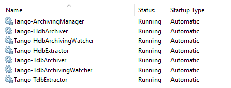
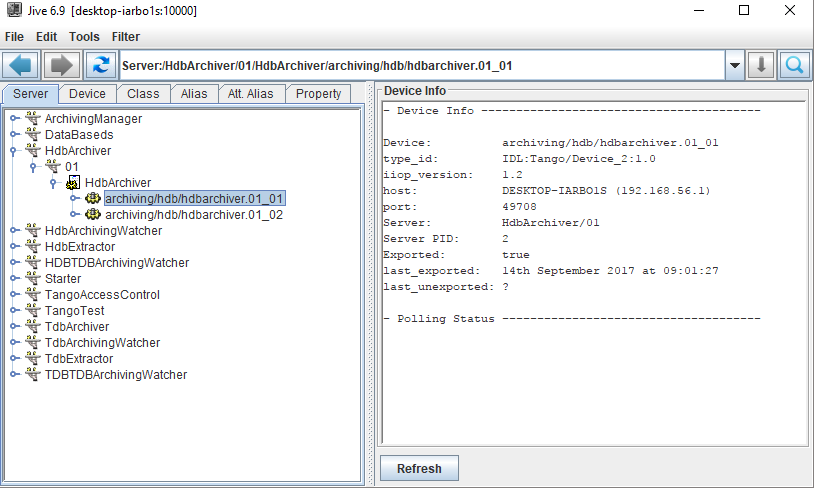
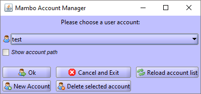
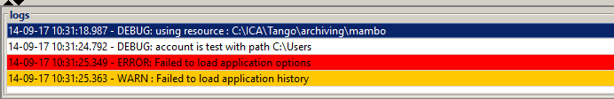
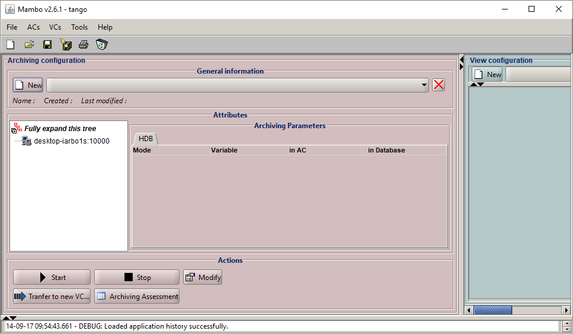

TANGO Archive Installer¶
Description¶
Installer for Tango Archiving: https://sourceforge.net/projects/tango-cs/files/tools/ArchivingRoot-15.2.1.zip
This package:
- Installs HDB (Historical Database), TDB (Temporary Database), Archiving Manager, HDB/TDB ArchivingWatchers and HDB/TDB ArchivingExtractos as TANGO Device Servers
- Runs mentioned Device Servers as Windows services at startup
- Installs Mambo
sub modules¶
| createDB.bat: | installation/configuration of HDB/TDB databases |
|---|---|
| installDS.bat: | installation of HDB/TDB device servers as Windows services |
| ArchivingRoot: | Tango archiving package containing: |
- scripts for starting archiving GUIs
- MySql database creation scripts
- scripts for starting archiving Tango Device Servers
Prerequisites¶
- Java Platform SE 6
- MySql Database
- a Tango control system
Installation¶
Before running installator ensure that:
- your TANGO_ROOT and TANGO_HOST environment variables are set
- nssm.exe file can be found in %TANGO_ROOT%/bin path
- Tango DataBaseds is running
Run .msi file.
User Guide¶
Before starting Mambo all of Tango Archiving Device Servers must be running. If your installation went fine, you’ll be able to see them in Windows Services:
You should also ensure, that they’re properly installed and working in Jive:
To run Mambo you can use either mambo-rw.bat or mambo.bat, however the second one only allows user to visualize archived data, while mambo-rw.bat allows to create an archiving configuration.
- Before using Mambo, new user account needs to be created:
- Run mambo-rw.bat or mambo.bat file located in %ARCHIVING_ROOT%/bin/win32
- Create a user account in the desired directory
Setting up name and path for new user
Choosing user account for current session
Note that with the first opening of Mambo you’ll get two error messages:
This is normal because Mambo always tries to load a previous configuration (which doesn’t exists yet). These messages won’t appear next time and your Mambo will be ready to work with:
